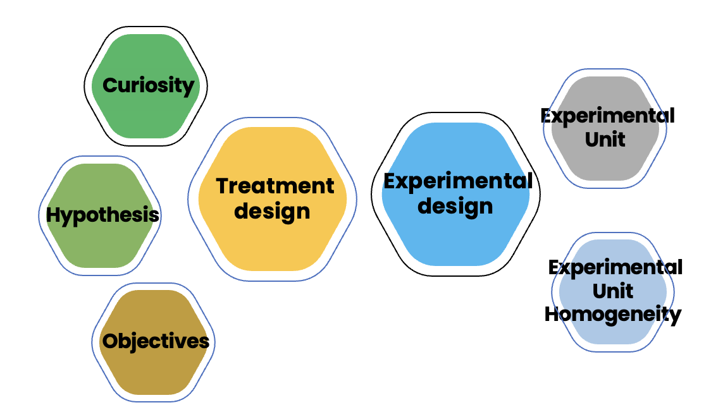
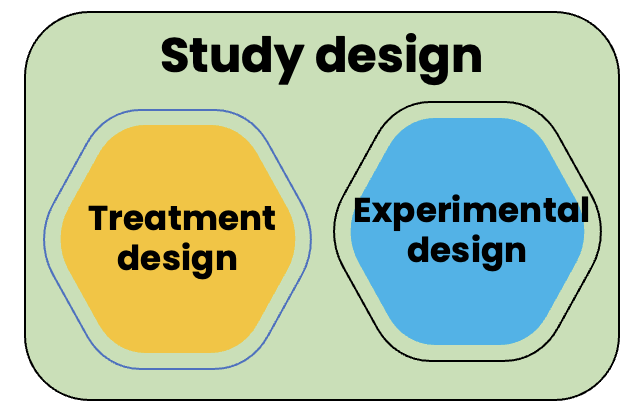
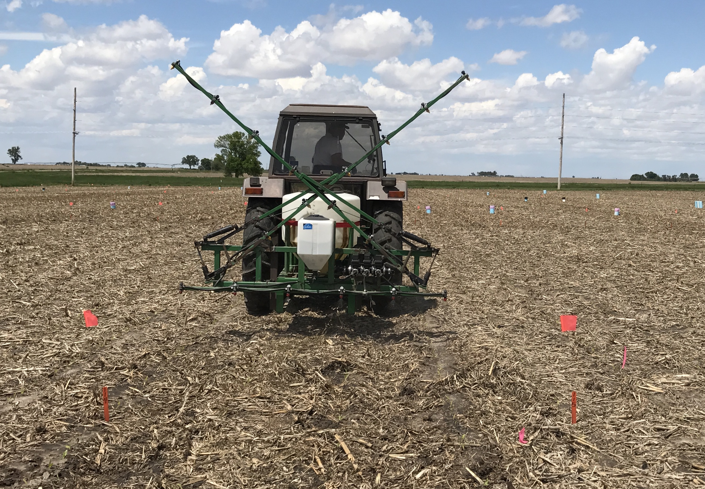
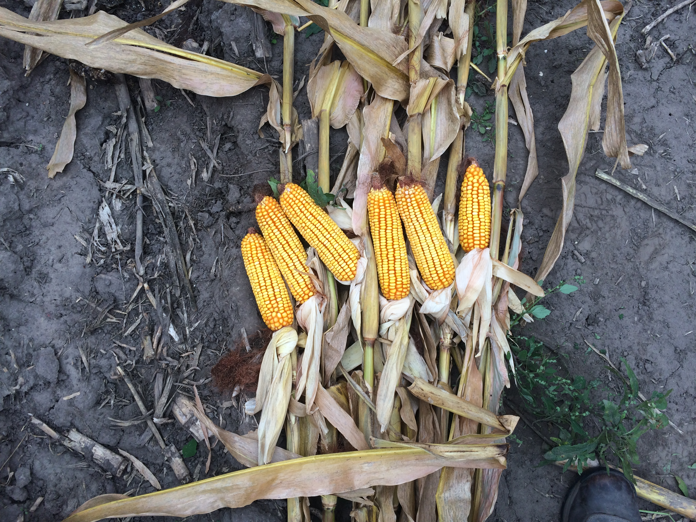
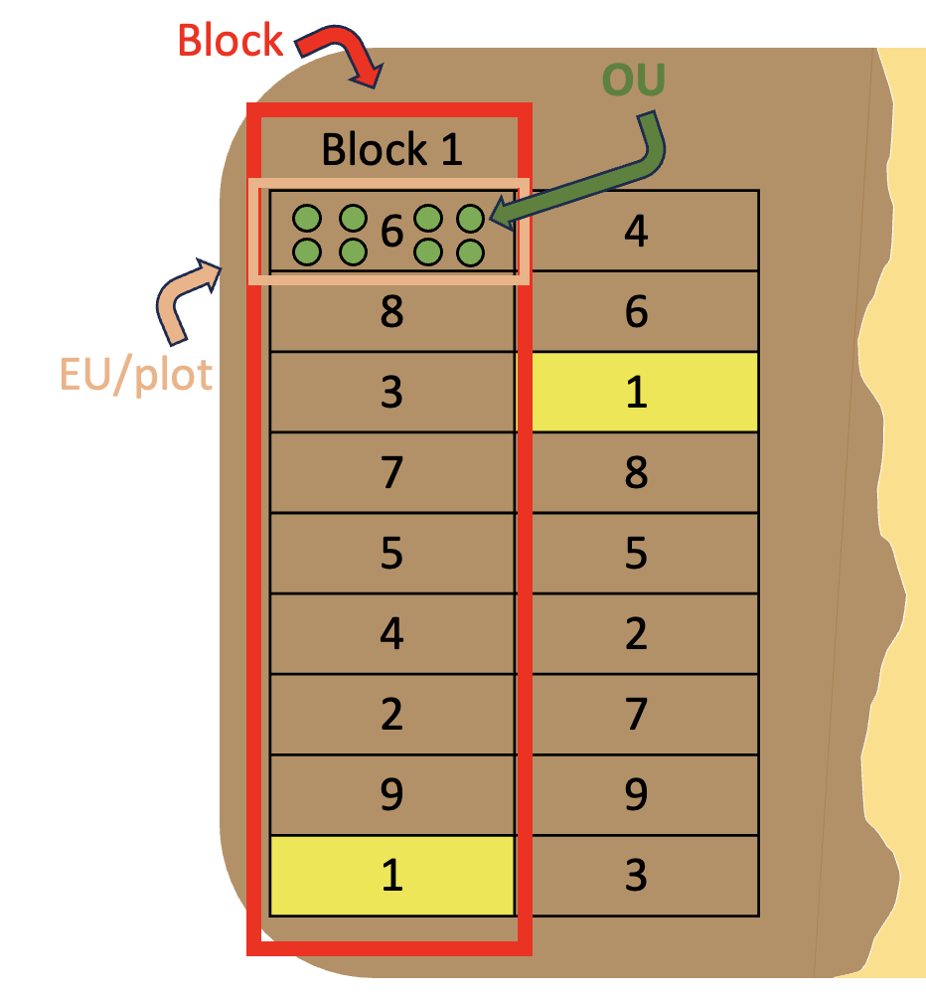
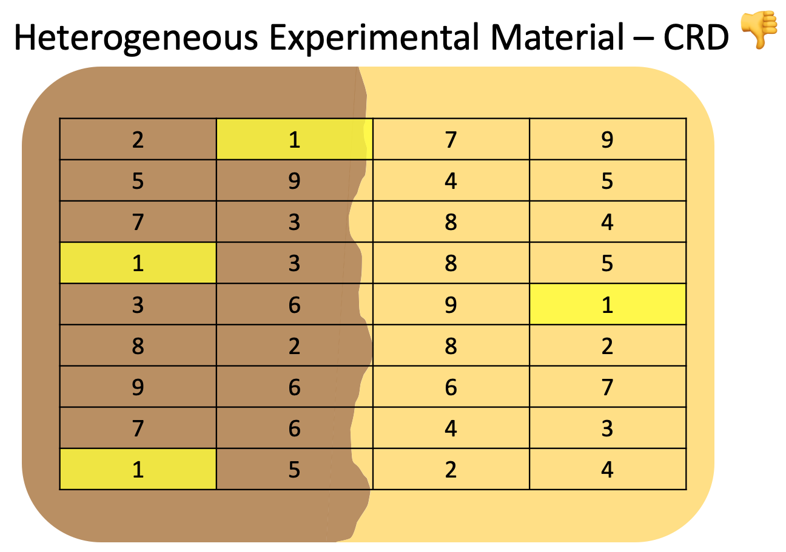

Experimentation concepts

Today’s goals
Explore key concepts in experimentation:
- Experimentation planning workflow
- Hypothesis setting
- Study design = treatment + experimental design
- Experimental unit vs. Observational unit
- CRD vs. RCBD
Experimentation planning workflow
Every study should follow a somewhat similar workflow that involves:
- Curiosity about a specific question
- Creating hypothesis related to that question
- Setting objectives
- Create a treatment design that addresses the objectives
Experimentation planning workflow
Every study should follow a somewhat similar workflow that involves:
- Define what is the experimental unit
- Determine the level of homogeneity of experimental material
- Create an experimental design that addresses experimental material homogeneity (or lack thereof)
Experimentation planning workflow

Hypothesis setting - some guidelines
Hypothesis formalize our belief about the outcome of the study BEFORE we conduct it.
Hypothesis must be testable and proved right OR wrong, but not both.
After collecting data, I should be able to say that the data provides evidence in support OR against my original hypothesis.
It is ok if you get to the end of your study and your data shows your original hypothesis was wrong, this is part of science!
Hypothesis setting - your turn
We hypothesize that increasing nitrogen (N) and potassium (K) fertilizer rates will increase corn grain yield.
. . .
Is this testable? Why?
Hypothesis setting - your turn
We hypothesize that increasing N and K fertilizer rates may increase corn grain yield.
Is this testable? Why?
Hypothesis setting - your turn
Our hypothesis is that greater N and K fertilizer rates can increase corn grain yield.
Is this testable? Why?
Objectives
Your objectives should stem directly from your hypothesis:
Hypothesis: We hypothesize that increasing N and K fertilizer rates will increase corn grain yield.
. . .
Objectives: Our objective is to assess the effect of different N and K fertilizer rates on corn grain yield.
Study design
A study design is comprised of two components:
Treatment design + Experimental design

Treatment design
Treatment design is the part of the study design related to what treatments you need to answer your hypothesis/objectives, and how they are related to one another.
Our goal is to select a treatment design that contains the treatment factors and their respective levels necessary to properly address the research question(s).
Treatment design - your turn
Let’s stop for a second and think about it.
If I want to find the optimum amount of an input, I really need to treat the crop with different levels of that input so I can estimate at which level the yield response is maximized.Since we have two inputs (N and K), we need to do that for both of them.
Treatment design - your turn
Also, it may be that N and K interact in affecting corn yield, so we are interested in this effect too.
We have 2 treatment factors (N and K), and now let’s decide on their levels:
. . .
- N fertilizer: 0, 100, 200 kg N/ha
- K fertilizer: 0, 30, 60 kg K/ha
Treatment design - factor vs. level
Treatment factors: K and N fertilizer
Treatment levels: the rates chosen within the treatment factors (e.g., 0, 30, 60 kg K/ha)
Treatment design - all levels
Since we are interested in how N and K interact, we need to have in our treatment design all the combinations between N and K fertilizer levels.
That leaves us with 3 N levels x 3 K levels = 9 total treatment combinations.
In other words, we need all the above 9 treatments to find the joint optimum N and K fertilizer rates that optimize corn yield.
This is called a crossed 2-way factorial treatment design, or, more informative, crossed 3 N rate x 3 K rate factorial treatment design.
Treatment design - factor hierarchy
Note that our treatment factors are crossed, meaning that both N and K are at the same hierarchical level in the treatment design.
In contrast, treatment factors can also be nested, where the levels of one treatment factor are allocated within the levels of the other. Split-plot is an example where treatment factors are nested, meaning that one factor is at a higher hierarchy than the other (this is subject of a future lecture).
Treatment design - final thoughts
Now, notice that the treatment design has only addressed our objectives.
So what is the use of the experimental design?
Experimental design
Experimental design is the part of the study design related to how your treatments are assigned to the experimental units.
The decision of which experimental design to use should be guided by two factors:
- Homogeneity of experimental material
- Limitations such as funds, space in an incubator, size of the benches, size of a field.
Experimental design
Our goal is to use the simplest experimental design that accommodates all our treatments and their replications in homogeneous experimental units.
Experimental design - EU
Experimental unit: the smallest unit in an experiment that is randomly and independently assigned to a treatment, normally is a plot in field research context. Unit of true replication.

Experimental design - OU
Observational unit: entity of which the response variable is measured. If not the same as EU, then watch out for sub-sampling (not true replicate).

Experimental design - some concepts
Replicate: different experimental units receiving the same treatment. Replicates exist in most designs.
Block: a set of experimental units grouped into homogeneous conditions where each EU is randomly assigned to a different treatment, and randomization happens independently for each block.
Experimental design - some concepts

Experimental design
Continuing with our example of N and K levels, let’s assume that we would like to have 4 replications. That brings us to 9 treatments x 4 replications = 36 experimental units. The question that follows then is
. . .
“Do I have enough homogeneous experimental material to accommodate all 36 experimental units?”.
Experimental design - some examples
Two of the most common experimental designs in agriculture are:
- Completely randomized design (CRD)
- Randomized complete-block design (RCBD)
Homogeneous Experimental Material - CRD ✅
“Do I have enough homogeneous experimental material to accommodate all 36 experimental units?”.
If the answer is Yes, then you can use CRD as the experimental design, and treatments will be randomized to the entire area (no restrictions in randomization).
Homogeneous Experimental Material - CRD ✅
In the plot layout here, all treatments (1 through 9) were randomly assigned to any experimental unit (plot) in the study area.
Homogeneous Experimental Material - CRD ✅
Treatment 1 and its replicates are highlighted.
Note how, due to the unrestricted randomization, treatment 1 appears twice in the first column, and does not appear on the third column. The same happened with other treatments.
Homogeneous Experimental Material - CRD ✅
Because the experimental material is homogeneous (e.g., same soil texture class), this should not be an issue when estimating treatment means and performing comparisons. 👍
Heterogeneous Experimental Material - CRD ❌
“Do I have enough homogeneous experimental material to accommodate all 36 experimental units?”.
If the answer is No, then you should consider what types of limitation you have and which experimental design can be used.
. . .
Let’s say we answered No in our example. We have enough area to allocate 36 plots on the field, but we know that the area has heterogeneity in soil texture, a feature that likely impacts corn yield.
Heterogeneous Experimental Material - CRD ❌
If we were to continue using a CRD, here’s what it would look like:

- Note that following the same unrestricted randomization process, now treatment 1 appears 3 times under a darker soil texture, and only 1 time under a light soil texture. This unbalance happens for many treatments.
Heterogeneous Experimental Material - CRD ❌
Suppose that dark soil texture has a positive effect on corn yield, and light soil texture has a negative effect.
In this case, using a CRD as in the example above, treatment 1 would likely have an average yield that is overestimated due to the unbalanced number of reps in each soil texture class.
Heterogeneous Experimental Material - CRD ❌
Because of how treatments were randomized (no restriction), it is impossible to separate the effect of treatment from that of the soil texture class.
All these have a negative effect on both treatment means (biased) and on the analysis standard error (inflated), which makes treatment comparisons unfair and inaccurate (more difficult to detect real differences).
Heterogeneous Experimental Material - RCBD ✅
But, we can fix this by choosing an appropriate experimental design!
For that, we could use an RCBD, where blocks will be entirely confined within a given soil texture class.
. . .
With RCBDs, each treatment appears once per block, and a set of 9 different treatments are randomized and assigned to each individual block separately.
Heterogeneous Experimental Material - RCBD ✅

Note how each treatment appears once and only once in every block.
The increased variability in corn yield caused by soil texture will be confined to the block effect, and can be properly dissected and not affect our inference on the treatment design variables.
CRD, RCBD, what else?
There are other experimental designs that account for increasingly complicated limitations in experimental material.
Some of these include latin square, balanced incomplete block, partially confounded factorial, cyclic, lattice, supersaturated, response surface, and other designs.
We will not get into those in this class as they are less common and field-specific.
Summary
It all starts with curiosity and a well defined, testable hypothesis.
Treatment design: addresses research question(s).
Experimental design: addresses lack of homogeneity and/or limitations (funds, size, etc.) of experimental material.
The proper choice of experimental design will allow for unbiased and accurate treatment comparisons.